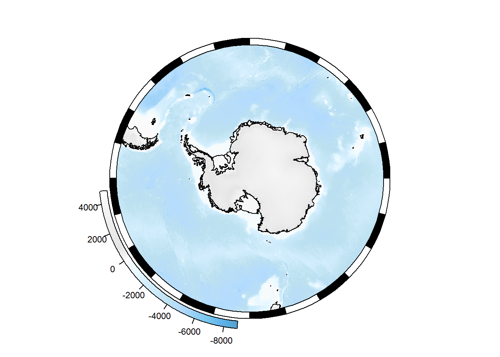

5 Mapping
5.1 SOmap
Blurb.
- intended to provide an easy way to get SO maps
- primarily polar stereo projection, though SOmap_auto is not necessarily so
- base/raster/sp
- gg
SOmap won’t necessarily get you exactly the map you want. But it should hopefully get you close enough that you can make modifications to suit your exact purposes.
5.1.1 Circumpolar maps
A basic circumpolar map in polar stereographic projection:
library(SOmap)
SOmap()
SOmanagement() provides a number of contextual layers such as MPA boundaries and management zones.
SOmap(trim = -40) ## plot to 40S
## add the exclusive economic zones management layer
SOmanagement(eez = TRUE)
5.1.1.1 Adding points
## some longitude/latitude data
library(sp)
my_points_ll <- data.frame(lon = seq(0, 350, by = 10), lat = -55, z = runif(36))
coordinates(my_points_ll) <- c("lon", "lat")
projection(my_points_ll) <- "+proj=longlat +datum=WGS84"This needs to be reprojected to match our map before plotting. The SOproj function does this:
## reproject to our SOmap projection
my_points <- SOproj(my_points_ll)
## and plot
SOmap()
plot(my_points, col = "blue", add = TRUE)
Or use SOplot to reproject and plot in one step:
SOmap()
SOplot(my_points_ll, col = "blue")
5.1.1.2 Adding raster layers
5.1.1.3 Modifying the SOmap object
Calls to SOmap(), SOmanagement(), SOmap_auto() return an object of class SOmap, SOmap_management, or SOmap_auto. These objects contain all of the data and plotting instructions required to draw the map. Calling print() or plot() on one of these objects will cause that code to be executed, and the object to be drawn in the current graphics device. Hence, calling SOmap() directly without assigning the result to a variable will make it appear in the graphics device, because the returned object is being printed to the console (and thus triggering the print method). But you can also assign the result to a variable, e.g. myplot <- SOmap() and then explicitly plot the object with plot(myplot). The advantage of this is that you can potentially manipulate the myplot object to make changes to the map before plotting it.
Note, this is likely to be fragile. Proceed at your own risk!
mymap <- SOmap()
names(mymap)## [1] "projection" "target" "straight" "trim"
## [5] "bathy" "box" "plot_sequence" "coastline"
## [9] "ice" "bathy_legend" "border"The object contains a plot_sequence component, which defines the order in which each part of the plot is drawn. The other components of the object contain the code required to draw each part. Take e.g. the ice component (this is the ice shelves, glacier tongues, etc). This is a list (in this case with only one element). Each element of the list specifies a function to run along with arguments to pass to it:
str(mymap$ice)## List of 1
## $ :List of 2
## ..$ plotfun : chr "plot"
## ..$ plotargs:List of 4
## .. ..$ x :sfc_POLYGON of length 354; first list element: List of 1
## .. .. ..$ : num [1:5, 1:2] 1022981 1026000 1021994 1021935 1022981 ...
## .. .. ..- attr(*, "class")= chr [1:3] "XY" "POLYGON" "sfg"
## .. ..$ col : logi NA
## .. ..$ border: chr "black"
## .. ..$ add : logi TRUE
## ..- attr(*, "class")= chr "SO_plotter"We can modify the function and/or its arguments:
mymap$ice[[1]]$plotargs$col <- "green"plot(mymap)
5.1.2 Non-circumpolar maps
- via
SOmap_auto - note that this is not always going to guess the best projection/extent
- best viewed as a starting point for your own maps
5.1.3 Plotting via ggplot2
The SOmap and SOmap_auto functions do their plotting using base graphics. If you are more comfortable working with ggplot2, this is also possible.
- convert SOmap object to ggplot format using
SOgg() - as with other
SOmapfunctions, this returns an object that contains all of the information needed to generate the map. Printing or plotting this object will cause it to construct aggplotobject. Printing or plotting that object will cause it to be drawn to the graphics device, just like any otherggplotobject.
myplot <- SOmap()
myplotgg <- SOgg(myplot) ## creates a SOmap_gg object
class(myplotgg)## [1] "SOmap_gg"my_ggplot <- plot(myplotgg) ## creates a ggplot object
class(my_ggplot)## [1] "gg" "ggplot"plot(my_ggplot) ## plot it
Or in one step (this will cause myplot to be converted to SOmap’s internal gg format, then a ggplot object constructed from that, then that object will be plotted):
SOgg(myplot)
5.1.3.1 Modifying these maps
We can modify these maps at two levels.
5.1.3.1.1 Modifying the SOmap_gg object
SOmap_gg objects are similar in structure to SOmap objects:
names(myplotgg)## [1] "projection" "target" "straight" "trim"
## [5] "init" "bathy" "coord" "plot_sequence"
## [9] "scale_fill" "bathy_legend" "coastline" "ice"
## [13] "axis_labels" "theme" "border"Instead of base plotting functions, SOmap_gg objects use ggplot2 function calls, e.g.:
myplotgg$ice[[1]]$plotfun## [1] "ggplot2::geom_sf"We can modify these function and/or arguments in a similar manner to SOmap objects.
myplotgg$ice[[1]]$plotargs$fill <- "green"plot(myplotgg)
5.1.3.1.2 Modifying the ggplot object.
Remember that printing or plotting a SOmap_gg object produces a ggplot object. This can be modified by adding e.g. layers or themes just like a normal ggplot. Remember to load the ggplot2 library now that we are using ggplot2 functions directly.
library(ggplot2)
my_ggplot + geom_point(data = as.data.frame(my_points), aes(lon, lat, colour = z), size = 3) +
scale_colour_distiller(palette = "Spectral")
5.2 Supporting data for maps
When constructing maps, we commonly want to show features like oceanographic fronts, ice extent, coastline, place names, and MPA boundaries. There are a few sources of such data:
- some layers are bundled into
SOmap, see theSOmap::SOmap_dataobject antanymprovides access to the SCAR Composite Gazetteer of place names- the
quantarcticRpackage provides access to Quantarctica data layers.
5.2.1 quantarcticR
Note, this package is still in development. Install if needed:
remotes::install_github("SCAR-sandpit/quantarcticR")Example usage:
library(quantarcticR)
ds <- qa_datasets() ## all available layers
kable(head(ds))| layername | main_file | type | cached | download_size |
|---|---|---|---|---|
| Overview place names | C:_ray8PMm/quantarcticR-cache/Miscellaneous/OverviewPlaceNames/OverviewPlaceNames.shp | shapefile | FALSE | 19.74K |
| COMNAP listed facilities | C:_ray8PMm/quantarcticR-cache/Miscellaneous/Stations/COMNAP_Antarctic_Facilities.shp | shapefile | FALSE | 691.92K |
| Subantarctic stations | C:_ray8PMm/quantarcticR-cache/Miscellaneous/Stations/Sub-antarctic_Stations.shp | shapefile | FALSE | 691.92K |
| SCAR Composite gazetteer | C:_ray8PMm/quantarcticR-cache/Miscellaneous/SCAR_CompositeGazetteer/SCAR_CompositeGazetteer.shp | shapefile | FALSE | 329.05M |
| IBO-IOC GEBCO Features (point) | C:_ray8PMm/quantarcticR-cache/Miscellaneous/IHO-IOC_GEBCO_UnderseaFeatureNames/GEBCO_point.shp | shapefile | FALSE | 1.25M |
| IBO-IOC GEBCO Features (multipoint) | C:_ray8PMm/quantarcticR-cache/Miscellaneous/IHO-IOC_GEBCO_UnderseaFeatureNames/GEBCO_multipoint.shp | shapefile | FALSE | 1.25M |
## more info about a particular layer
my_layer <- qa_dataset("Median sea ice extent 1981-2010")
my_layer## # A tibble: 1 x 11
## layername
## <chr>
## 1 Median sea ice extent 1981-2010
## datasource
## <chr>
## 1 SeaIce/Median Ice Extents/Median_SeaIce_Extents_1981-2010.shp
## layer_attributes srs_attributes provider
## <list> <list> <chr>
## 1 <NULL> <tibble [1 x 4]> ogr
## abstract
## <chr>
## 1 "Monthly median sea ice extents for the period 1981-2010.\n\nFetterer, F~
## extent type download_size
## <list> <chr> <fs::bytes>
## 1 <NULL> shapefile 131K
## main_file
## <chr>
## 1 "C:\\Users\\ben_ray\\AppData\\Local\\Temp\\Rtmpkj8PMm/quantarcticR-cache~
## bb_source$id
## <chr>
## 1 Quantarctica: Median sea ice extent 1981-2010
## $name $description
## <chr> <chr>
## 1 Median sea ice extent 1981-2010 Quantarctica data
## $doc_url $source_url
## <chr> <list>
## 1 http://quantarctica.npolar.no/ <chr [1]>
## $citation
## <chr>
## 1 Matsuoka, K., Skoglund, A., & Roth, G. (2018). Quantarctica Median sea i~
## $license $comment $method $postprocess
## <chr> <chr> <list> <list>
## 1 CC-BY 4.0 International <NA> <list [5]> <list [0]>
## $authentication_note $user $password $access_function $data_group
## <chr> <chr> <chr> <chr> <chr>
## 1 <NA> <NA> <NA> <NA> <NA>
## $collection_size
## <lgl>
## 1 NA## fetch the actual data for that layer
layer_data <- qa_get(my_layer)
## plot it
plot(layer_data[layer_data$MONTH == "October", ])
## or add to a SOmap
SOmap(trim = -50, border_width = 0.5)
SOplot(layer_data[layer_data$MONTH == "October", ], col = "red")
5.2.2 antanym
See the overview article.